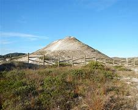
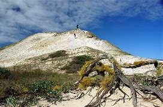
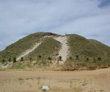
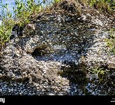
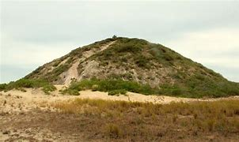

Sambaqui
O que é Sambaqui?
Sambaqui são construções feitas pelo humano que variavam entre 5 a 30 metros de altura, alguns deles chegavam a ter 70 metros de altura. Esses sítios normalmente eram compostos de terra, areia e conchas. Também podendo conter artefatos de pedra, ossos e esqueletos de homens, mulheres e crianças(AGUIAR, 2013)..
Figura 31, Sambaqui.
Esses sítios ocuparam a costa da América do Sul (Brasil e Uruguai), evidências arqueológicas mais antigas sugerem que grupos nomeados de sambaquieiros, começaram a erguer esses montes a cerca de 8.000 anos atrás, o ápice de construção dos sambaquis foi ocorrer somente entre 4.000 e 2.000 anos atrás, essa prática acabou por volta de 1.000 anos atrás e com isso o aparecimento de outros grupos no litoral(AGUIAR, 2013).
O povo que vivia no Sambaqui era da espécie Homo sapiens?
Sim, "De acordo com a teoria de Bering, o homem teria chegado à América através do Estreito de Bering, localizado entre o extremo leste do continente asiático e o extremo oeste do continente americano, os dois pontos se encontram separados por 85 km(AGUIAR, 2013);
Figura 32, Sambaqui.
Segundo essa teoria, a chegada do homem ao continente americano ocorreu há, aproximadamente, 50 mil anos, quando nômades asiáticos atravessaram o Estreito de Bering; que nesse período encontrava-se congelado em razão da era glacial, formando assim uma ponte natural entre os dois pontos(AGUIAR, 2013);
A partir daí o homem migrou até a parte meridional do continente americano. Essas são teorias que possuem maior aceitabilidade no meio científico, mas não se tem certeza quanto às suas afirmações, e assim se acredita que os ancestrais do continente americano são os Homo sapiens (SOUSA,2021).
Como esse povo chegou até a América?E, pelos elementos que existem na arqueologia, quando habitaram a região da Baía da Babitonga.
A teoria migratória de maior destaque acredita que os primeiros grupos humanos a chegar ao continente contavam com semelhanças físicas próximas das populações mongolóides e pré-mongolóides da Ásia(SOUSA,2021);
Figura 33, Sambaqui.
A chegada desses povos à América aconteceu graças ao congelamento do Estreito de Bering, que separa o continente asiático da porção norte da América. Há cerca de 12 mil anos, o congelamento do Estreito e a baixa no nível das águas do Oceano Glacial Ártico permitiram a migração do homem pré-histórico asiático para a América(SOUSA,2021);
Este ambiente, conhecido como complexo estuarino, abrange os municípios de São Francisco do Sul, Balneário Barra do Sul, Araquari, Joinville, Garuva e Itapoá, e conta com registros de ocupação humana há pelo menos 6.000 anos A.P. (Antes do presente) devido, principalmente, à riqueza ambiental desta área, com oferta de água, alimentos e abrigo, fatores que certamente favoreceram a escolha deste ambiente por populações antigas (SOUSA ,2021).
Qual era a principal fonte de alimentação deles? Como se sabe essa informação?
“O alto consumo de alimentos ricos em carboidratos nesses dois sambaquis sugere que o sustento de suas populações estava baseado em uma economia mista. Uma economia que aliava a pesca e a coleta de frutos do mar com alguma forma de cultivo de plantas”, disse o bio arqueólogo Luis Nicanor Pezo-Lanfranco, do Instituto de Biociências (IB) da USP, primeiro autor do artigo, cujo estudo teve apoio da Fapesp.
Figura 34, Sambaqui.
Pezo-Lanfranco desenvolveu o estudo no Laboratório de Antropologia Biológica do IB, liderado pela professora Sabine Eggers em parceria com arqueólogos da University of York, no Reino Unido, e do Museu do Sambaqui de Joinville (SC);
O novo estudo tem base em evidências de patologia oral e em resultados isotópicos extraídos diretamente dos esqueletos. As análises revelaram o consumo inesperadamente alto de recursos vegetais, ou seja, de carboidratos, entre as populações que habitaram o sambaqui Morro do Ouro do litoral norte de Santa Catarina durante o Holoceno Médio (de 8 mil a 4 mil anos atrás);
Figura 35, Sambaqui.
As principais fontes de alimentação deles era moluscos, frutos silvestres e caça de pequenos animais(SOUSA, 2021).
Referência
- Fonte da América"; Brasil Escola 2021. Disponível em: https://brasilescola.uol.com.br/historia-da-america/ocupacao-continente-americano.htm. Acesso em 22 de abril de 2023;
- Fonte :AGUIAR, Lilian Maria. "Os povos sambaquis"; Brasil Escola 2013. Disponível em: https://brasilescola.uol.com.br/historiag/os-povos-sambaquis.htm. Acesso em 22 de abril de 2023;
- Fonte: Zoólito no Sambaqui,Zoólito 2015. Disponível em: https://hav120151.wordpress.com/2015/12/07/zoolito-no-sambaqui/; Acesso em 25 de abril de 2023;
- Fonte: SuperInteressante, Rodrigo Ratier. "O que são os sambaquis?" 2018. Disponível em: https://super.abril.com.br/mundo-estranho/o-que-sao-sambaquis/